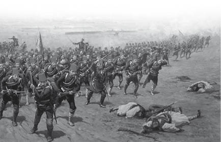
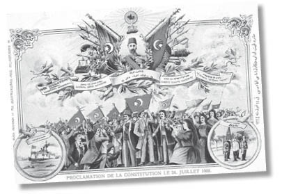
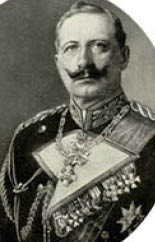

XXI : II. ABDÜLHAMİD
1876-1909
Abdülaziz’in tahttan indirilmesi üzerine, Abdülmecid’in en büyük oğlu olan yeğeni V. Murad, kendi iradesi dışında, padişah ilan edilmiştir. Uzun bir süre “Kafes”te kalmış olmasından dolayı yitirmiş olduğu aklı ve ölçüsüz tavırları bu beklenmedik olayla birlikte tamamen kontrolden çıkmış ve tahta çıkışından birkaç hafta sonra, 31 Ağustos 1876 gününde, kendisini tahta çıkarmış olan Meclis-i Mebusan için V. Murad’ın tahttan indirilerek yerine yeni vârisin getirilmesi gerekmiştir. Kardeşi II. Abdülhamid otuz üç yıl boyunca tahtta kalmış ve 1909 yılında tahttan indirildiğinde yerine tahta geçen diğer kardeşinin gözetiminde mahkum hayatı yaşamaya devam etmiştir.
Abdülhamid, Osmanlı hanedanının en kurnaz ve acımasız sultanlarından biri olmuştur. Annesi Ermeni’dir. Abdülhamis cesur bir insan değildir. Komplo ve suikast korkusu içinde yaşamış ve etrafındaki herkesten şüphe duymuştur. Hiç kimseye, nâzırlarına bile güvenmemiştir. Nâzırlarının birbiriyle görüşmelerine izin vermemiştir. Herhangi iki nâzırın gizlice görüştüğünü öğrendiğinde şüpheleri artmış ve bu kişilerden hesap sormuştur. Nâzırlarının, elçilerinin ve devlet için önemli olan diğer kişilerin yaptıklarını doğrudan ve günü gününe kendisine bildiren büyük bir casus ordusuna sahip olmuştur. Bu casuslar, sultana genellikle doğru olmayan raporlar sunmuş ve Abdülhamid de bu raporlar doğrultusunda hareket etmiştir. Aksi durumda onaylamayacağı tedbirlere razı gelmesini sağlamak adına birtakım komplo teorileri uydurulmuştur. Düşmanları ile şüphelendiği kişilerin suikastlarının gizlice gerçekleştirilmesi uygulamasına izin vermiştir. Abdülhamid döneminde hiçbir Türk vatandaşının can güvenliği olmamıştır. Binlercesinin sultanın emri sonucu bazı gizli ajanlar aracılığıyla ya öldürülmeleri ya da sürgünde herhangi bir anda ortadan kaybolmaları olasıdır. Bu uygulamalar, sultanın acımasızlığından değil, kendisinin suikasta uğrayacağı korkusundan ve kendisine karşı hazırladıkları planları hayata geçirmeden önce erken davranıp düşmanlarını öldürmesiyle güvenliğinin sağlanacağı inancından doğmuştur. Yabancı kuvvetlerin elçileri, askerî gücün kullanılacağı konusunda sultana gözdağı vermeyi başaramadıkları zamanlarda Abdülhamid’in üzerinde çok az bir etkiye sahip olmuş; fakat bunu başardıklarında sultan savaşa girmektense rıza göstermeyi tercih etmiştir. Abdülhamid, elçileri birbirine düşürme konusunda büyük bir kurnazlık göstermiş ve diplomasiyle ilgili entrikalarda usta olmuştur.
Abdülhamid’in yaşamı dur durak bilmeyen bir çalışma hayatından ibarettir. Kendisini işine adamıştır. Hataları ne olursa olsun, nâzırlarının ve devletinin mutlak efendisi olmuştur. Osmanlı İmparatorluğu, Abdülhamid’in yönetimi kadar merkezî ve titiz bir yönetime sahne olmamıştır. Abdülhamid kimseye güvenmediği için genellikle önemsiz detaylar arasında boğulmuş ve önemli sorunlar göz ardı edilmiştir. İmparatorluk işlerini diğer kişilerden bilgi veya tavsiye almadan yürütemeyeceği aşikârdır; fakat hiç kimse sözde nâzırların tavsiyelerini geçersiz kılarak sultana, hareminden gözde bir cariyenin mi, harem ağasının mı, bağnaz bir dervişin mi, müneccimin mi yoksa bir casusun mu tavsiyelerde bulunacağını bilememiştir. Devlet yetkilileri ile saray köleleri arasında yaşanan düşmanlıklardan ötürü devlet sürekli bir karmaşa içinde olmuştur.
Dışarıdan bakıldığında Abdülhamid bir beyefendinin tavırlarına sahip olmuş; fakat yakından tanındığında İstanbul’da bulunabilecek bir köylü kadar cimri olduğu anlaşılmıştır. Paragöz bir insan olmuş, parasını hesapsızca harcamasına ve bol bol bağış yapmasına rağmen kara günler için Alman bankerler aracılığıyla gizlice biriktirdiği muazzam bir servete sahip olmuştur. Beklediği kara günler gelip çattığında ve Abdülhamid herkesin nefretini toplayarak tahttan indirildiğinde hayatı, bu servetini elinden alma gayesiyle bağışlanmıştır. Çoğunlukla imtiyaz talep eden yatırımcılardan olmak üzere rüşvet almıştır. Devlet idaresinin en kötü yanı olan makamların satılması ve yetkililerin de kendi zararlarını telafi etmek için yerel halktan haraç alması uygulamalarını düzeltmek için hiçbir şey yapmamıştır. Devlet idaresi için gerekli olan bazı yeteneklere sahip olmasına ve bağnazlıktan uzak durmasına rağmen hükümdarlığı boyunca her şey kötüye gitmiş ve Berlin Antlaşması’ndan sonra ulaşılan barış ortamından sonra kendi halkını iyileştirmek için hiçbir şey yapamamış ve hatta her şey daha da kötüye gitmiştir. Benimsediği politikanın sonucunda, imparatorluğu, seleflerinin zamanında yaşanandan çok daha büyük bir parçalanma sürecine girmiştir; Abdülhamid, gücü kendi tekeline almış olduğu için bu sonuçtan sorumlu tutulması gereken tek kişidir.
Hükümdarlığının ilk zamanlarında, Abdülhamid, imparatorluğunun bütünlüğünü etkileyen ciddi bir sorunla karşı karşıya kalmıştır. 1875 yılında, Bosna ve Hersek’te bir isyan baş göstermiş, nedeni, yalnızca Türk paşaları ve resmî görevlilerinin açgözlülükleri ve halktan haraç keserek gerçekleştirdikleri kötü yönetim ile vergideki iltizam usulünde yaşanan haksızlıklar değil, ayrıca bozuk ziraat sistemi olmuştur. Toprak sahiplerinin büyük bir çoğunluğu reayalarla aynı Slav ırkından olmalarına rağmen Müslüman’dır. Ataları, Osmanlı İmparatorluğu ülkelerini fethettiğinde topraklarını korumak amacıyla Müslüman olmuştur. İmparatorluğun diğer bölgelerindeki Türk toprak sahipleri kadar açgözlü ve bağnaz olmuşlardır. Bu vilayetlerin yönetiminde Hıristiyanlara yer verilmemiştir. Mahkemelerde, Hıristiyan reayaların şahitliğine izin verilmemiştir. Hak veya haksızlık ancak rüşvetlerle sağlanmıştır. Polis ve diğer görevliler, korumaları gereken kişilerden para sızdırarak hayatlarını sürdürmüştür.
1874 yılından yaşanan kötü hasat, iltizamla çalışan çiftçiler ayrıcalık yapmayı reddettiği için isyanın bir sonucu olarak ortaya çıkmıştır. Bu isyan başlangıçta sultana değil Müslüman toprak sahipleri ile Türk görevlilerine karşı başlatılmış; fakat daha sonra genel bir başkaldırıya dönüşerek sultanın hükümetine karşı yapılan ayaklanma haline gelmiştir. Avusturya ve Rusya isyanı sonlandırmak ve imparatorluğu birtakım imtiyazlar yapmaya ikna etmek için büyük çabalar sarf etmiştir. Avusturya-Macaristan Dışişleri Bakanı olan Kont Andrassy, her iki vilayeti huzura kavuşturmak için bir plan hazırlamıştır. Bu planda, iltizam usulüyle vergi toplamanın kaldırılmasını, vilayetlerde toplanan vergilerin yerel halk için harcanmasını, dinî eşitliğin tamamen sağlanmasını ve bu reformların yerine getirilip getirilmediğini denetlemesi adına karma bir komisyon kurulmasını önermiştir. Plan, Rusya, İngiltere ve diğer güçler tarafından uygun bulunmuş ve plana peşinen onay veren sultana sunulmuştur. Fakat Osmanlı İmparatorluğu’ndaki diğer reform vaatleri gibi bu plan da hayata geçirilmemiştir. Planın herhangi bir aşamasını gerçekleştirmek için tek bir adım dahi atılmamış ve iki vilayetteki isyanlar sürdürülmüştür. İsyancılar taleplerinin boyutlarını artırmış ve toprağın üçte birinin reayalara verilmesi hususunda ısrarcı olmuştur. Hükümete muhalefetle alevlenen isyanlar, sonunda Bulgaristan’a dek ulaşmıştır.
21 Nisan 1876 yılında, Rodop Dağları’nın güneyinde merkezi Batak olan bir Bulgar isyanı baş göstermiştir. Ahmet Ağa komutasında İstanbul’dan gönderilen küçük bir Türk birliği isyanı güçlükle bastırmış, görevi gerçekleştiren birliklerde çok az can kaybı yaşanmış; fakat yalnızca hayatları bağışlanarak teslim olan isyancılara değil, ayrıca bölge sakinlerine de kötü davranılmıştır. Bulgaristan’da çiftçilik yapan ve Kırım’dan gelme Tatarlardan oluşan Başıbozuklar serbest bırakılmıştır. Yaklaşık olarak yirmi bin kişi, gerçekleştirilen bu misillemelerde hayatını kaybetmiştir. Ahmet Ağa sergilediği tutumdan ötürü sultan tarafından ödüllendirilmiştir. İmparatorluğun baş gösteren bir ayaklanmayı bastırma yönteminde yüzyıllardan beri hiçbir değişiklik olmamıştır. Bu yöntem, isyan eden kişilerden, topraklarında yaşayan insanları korkutacak ve gelecekte bir uyarı niteliği taşımasını sağlayacak zalimliklerle intikamlarını almak için uyguladıkları geleneksel sistem ve politikaya ters düşmemiştir.
1876 yılında Bulgarların isyanıyla ilgili yeni olan durum ise Batak’ta gerçekleştirilen zalimliklerin, İstanbul’daki Daily News muhabiri olan Edwin Pears tarafından kaleme alınmış olmasıdır. Bu haberler, İngiltere’deki kamuoyu üzerinde derin izler bırakmıştır. Başbakan Disraeli, Avam Kamarası’nda bu haberleri geçersiz kılmış; fakat aynı gazetenin bölgeyi ziyaret etmiş olan başka bir muhabiri MacGahan haberlerin doğru olduğunu iddia ettiğinde hükümet konuyla ilgili araştırmalar yapması için İstanbul’daki İngiliz Elçisi Walter Baring’i görevlendirmiştir.
Avam Kamarası’nda, Kırım Savaşı’ndan sorumlu İngiliz devlet adamları arasından hayatta kalan tek kişi ve Liberal partinin önderliğinden bir süre önce çekilmiş olan Gladstone, Bulgaristan’da yaşanan olaylar üzerine, emeklilik hayatından sıyrılmak ve Paris Barış Antlaşması’nın ülkesini sorumlu tuttuğunu düşündüğü Osmanlı İmparatorluğu’nun Avrupa’daki topraklarında yaşayan Hıristiyanlara yardım etmek için galeyana gelmiştir.
Bu esnada, Batak’ta yaşananlar Rusya’nın öfkesini ve Avusturya’nın korkularını uyandırmıştır. Selanik’te bağnaz Müslümanların başlattığı bir ayaklanmanın sonucunda Fransa ve Almanya konsolosları öldürülmüştür. Bosna’daki Slav kardeşlerine duydukları yakınlıkla harekete geçen Sırbistan ve Karadağ Türklere karşı savaş ilan etmiştir. Türk birlikleri, Rusya’dan yardım talep eden Sırpları yenilgiye uğratmıştır. Bu aşamada, Almanların desteğini alan Rusya ve Avusturya, büyük bir çatışmanın olmasını engellemek için çaba sarf etmiş ve imparatorluğu, gerekli olduğunu kabul ettiği reformları gerçekleştirmeye zorlamak için Berlin Memorandum’u adında bir plan hazırlamıştır. İngiliz hükümeti, oluşturulma aşamasında kendisine danışılmadığı ve başarılı olacağına inanmadığı gerekçeleriyle bu planın bir parçası olmayı açıkça reddetmiştir. Ayrıca bu esnada, Akdeniz’deki İngiliz donanması baş göstermiş olan kargaşadan tebaasını korumak amacıyla Beşik Koyu’na gönderilmiş; fakat Osmanlı İmparatorluğu bu adımın diğer güçlerin taleplerine karşı kendilerine destek vermek için atıldığını sanmıştır.
Bu adımların, İngiliz hükümetinin Avrupa topluluğundan çekildiği ve Kırım Savaşı’na yol açmış olan politikanın yenilenmesi anlamına gelmesinden korkan Gladstone, Berlin Memorandumu’nun onaylanması reddedildiği için Avam Kamarası’nda bu duruma karşı çıkmıştır. Daha sonra, 1876 yılının Eylül ayında, Gladstone, coşkulu bir dille Batak’ta yaşananları anlatan ve Türk hükümetini kınayan “Bulgarların Korkuları” adlı bir broşür yayımlamıştır. Bu broşürde, Kırım Savaşı ile ilgili sorumluluğu artık taşıyamayacağını bildirmiştir. Çünkü aksi takdirde, “bahsi geçen yüzyılın kayıtlarının en kötü suçlarına ortak olmakla” suçlanacaktır.
Kırım Savaşı’na karşı çıkanların, özellikle Paris Barış Antlaşması’nın Avrupa’yı bir bütün haline getirdiğini ve Bulgaristan’da Türk yetkililerine çalma, öldürme ve yağmalama hakkını veren Osmanlı İmparatorluğu’nun bütünlük ve bağımsızlığından yalnızca Rusya’nın sorumlu olmadığını hatırlaması gerekmektedir... Krallık ve devletin eski bir hizmetkârı olarak ben, diğer Avrupa vatandaşlarından daha fazla nüfuza sahip olacak yurttaşlarımın, hükümetimizden mevcut yolunu bırakıp diğer yoldan gitmesi ve Avrupalı diğer devletlerle birlikte bütün gayretini Türk yönetimini Bulgaristan’dan çıkarmaya adaması konusunda ısrarcı olmalarını rica ediyorum. Türklerin yapmış oldukları kötülükleri tek bir yolla yani kendileriyle birlikte alıp götürmelerini sağlayın. Zaptiyelerinin, müdürlerinin, binbaşılarının, yüzbaşılarının, kaymakamlarının ve paşalarının tasını tarağını toplayıp harap edip kirletikleri yerlerden gitmelerini ümit ediyorum.28
28 Bulgarların Korkuları ve Doğu Meselesi, 1876.
Bu broşür, İngiltere’deki halkın üzerinde derin izler bırakmıştır. Ayrıca, kıdemli devlet adamlarının konuşmaları sürdürülmüştür. Ülkede, Osmanlı’daki Hıristiyan halklara duyulan yakınlığın belirtildiği toplantılar gerçekleştirilmiştir. Bu harekette Türkler, acımasızlıkları ve kötü yönetimlerinden dolayı kınanmıştır. Kararlar, Gladstone tarafından önerilen politikalarla uyum içinde alınmıştır. Lord Stratford da bu çalışmalara destek vermiş; fakat Gladstone’dan, Bulgarlar için değil Osmanlı’da yaşayan bütün azınlıklar için çaba harcanması gerektiğine dair düşünceleri açısından ayrılmıştır. İngiltere’deki kültürlü insanların birçoğu politik görüşleri ne olursa olsun bu harekete katılmıştır.
Bu olaylar esnasında Beaconsfield Kontu unvanını alan Disraeli, Avam Kamarası’ndaki görevinden emekliye ayrılmasının üzerine bu harekete direniş konusunda büyük bir cesaret ve kararlılık örneği göstermiştir. Disraeli tamamen zıt bir görüşe sahip olmuştur. Doğu politikası, Palmerston gibi bir önceki neslin devlet adamları ile aynı doğrultuda olmuş ve İngiliz İmparatorluğu’nun bütünlüğünü korumasında Türk İmparatorluğu’nun önemli bir role sahip olduğunu düşünmüştür. Değişiklik yapmak için bir neden olmadığı kanaatindedir. Ayrıca, Rusya’nın daha fazla ilerlemesinden korkmuştur. İmparatoru’nun dürüstlüğüne inanmamıştır. Yirmi Eylül tarihinde Aylesbury’de gerçekleştirdiği bir mitingde görüşlerini bildirmiş ve bu akımı sonlandırmaya çalışmıştır. Bulgarların korkularıyla alay etmiştir. Bulgarlara kötülükler yapanların, kendi siyasî amaçları için onları kullananlardan kötü olmadığını beyan etmiştir. Ülkelerinin Rusya tarafından işgal edilmesi durumunda Türkleri desteklemeye ve Kırım Savaşı politikasını yenilemeye hazırlanmıştır. Fakat tüm çabalar sonuçsuz kalmıştır.
Disraeli
Gladstone’un başlattığı galeyan, İngiliz hükümetini, Türk hükümetini Hıristiyan vilayetlerine özerklik vermeye veya reformları yerine getirmeye zorlama konusunda diğer güçlere katılmaya ikna edememiş olsa da tarihî açıdan iki önemli sonucu doğurmuş bu da İngilizlerin kışkırtmalarına bir gerekçe olarak ele alınmıştır. İngilizler, Rusya’nın Osmanlı İmparatorluğu’nu işgal etmemesi için Balkanlar’daki Hıristiyan halk lehine Türklere silahlı destek vermiş, böylece Kırım Savaşı politikasının yenilenmesi imkânsız hale gelmiştir. Lord Beaconsfield gibi Türkleri ve mevcut durumu destekleyenlerin önünü kesmiştir. Diğer bir yandan, İngiltere’nin direniş göstermeyeceğinin bariz bir hal alması Rusları silahla müdahaleye sevk etmiştir. Lord Beaconsfield Kabinesi bu konu üzerinde ikiye bölünmüştür. Kabine üyelerinin büyük bir çoğunluğu, Osmanlı İmparatorluğu için Ruslarla savaşmayı reddederek Dışişleri Bakanı Lord Derby’nin tarafında olmuştur.
Lord Beaconsfield’ın Aylesbury’de yaptğı Türk yanlısı konuşmanın ertesi günü, 21 Eylül tarihinde, Lord Derby, hükümet lehine, İstanbul’daki elçisini, Türk yetkilileri ve birliklerinin Bulgaristan’da yaptıkları kötülüklerin İngiliz halkının öfkesine sebep olduğunu ve Paris Antlaşması’nın taraflarından biri olan İngiliz Hükümeti’nin bunlara kayıtsız kalmayacağını imparatorluğa bildirmesi hususunda görevlendirmiştir.
Lord Derby, 30 Ekim tarihinde, St. Petersburg’daki elçisi aracılığıyla Rus hükümetine, İngiltere’de Türklerin zalimliklerine karşı ne denli sert duygular beslenirse beslensin, İstanbul’un tehdit edilmesi veya İngilizlerin Süveyş Kanalı’ndaki çıkarlarının tehlikeye düşmesi durumunda bu duyguların yerine yenilerinin geçeceğini bildirmiştir. Rus hükümetine gönderilmiş olan bu mesaj, Ruslar tarafından, Rusların İstanbul’u işgal etmemesi veya İngilizlerin Mısır’daki sömürgelerini tehdit etmemesi halinde, İngiliz hükümetinin, Rusların Türklere karşı gerçekleştireceği eylemlere müdahale etmeyeceği olarak anlaşılmıştır. Söz konusu mesajın alınması üzerine Rus imparatoru, 2 Kasım gününde, İngiliz elçisine, istanbul’u alma veya Bulgaristan’ı topraklarına katma planlarının olmadığına dair şeref sözü vermiştir.
Rus imparatorunun bu beyanına rağmen, Lord Beaconsfield, birkaç gün sonra, 9 Kasım gününde Londra’daki senede bir düzenlenen kent şöleninde, İngiliz dışişleri bakanının mesajına cevaben, Türkiye lehine bir konuşma yapmış ve bu konuşma esnasında elinde olmasına rağmen Rus çarının barış güvencesini dikkate almaksızın Ruslarla savaşa girilebileceğinin sinyallerini vermiştir. Bu açıklama, İngiltere başbakanının, imparatorun iyi niyetine inanmadığını bildiren bir imadır.
İngiliz başbakanının bu tehditkâr konuşması Rusya’ya bildirilmiş, bunun üzerine öfkelenen çar ertesi gün, 10 Kasım’da, Moskova’da halkına seslenmiş ve Hıristiyan halklarının korunması için Osmanlı İmparatorluğu’nun yeterli teminatları sağlamaması durumunda, diğer güçlerden bağımsız olarak hareket edeceğini ve bunun için de halkının bağlılığına güvendiğini bildirmiştir.
Bu esnada, Lord Derby’nin çabalarıyla, ortak amaçları olan Avrupa’daki Hıristiyan halkların daha iyi korunması için, sultana sunulacak olan idari değişikliklere karar verilmesi adına Rusya ve diğer Büyük Güçlerle, İstanbul’da, bütün devletlerin temsilcilerinin katılacağı bir konferansın düzenlenmesi gerektiği hususunda mutabakat sağlanmıştır.
Lord Salisbury
Lord Salisbury, İngiliz Kabinesi’nin bir üyesi ve Hindistan devlet bakanı olarak bu konferansta İngiltere’yi temsil etmiştir. Konferans, 23 Aralık 1876 tarihinde İstanbul’da gerçekleştirilmiştir. İstanbul’daki konferanstan bir gün önce padişah, Midhat Paşa’nın ısrarları üzerine, Sultan Murad’ın kısa süren hükümdarlığında bakanların onay verdiği, fakat Abdülhamid’in tahta çıkmasıyla birlikte reddettiği meşrutî reformlarla ilgili planın duyurulduğu bir ferman çıkarmıştır. Genel oylama ile ırk ve din ayrımı gözetilmeksizin imparatorluk çapında bir Meclis-i Mebusan toplanmıştır. Bu meclisin, hakikatte sunulacak olan reformlardan daha geniş bir reform çerçevesi ile konferansa katılacak olanların taleplerini öngörmesi umulmuştur. Bu toplantı, reform yanlısı olan Midhat Paşa’nın iyi niyetleriyle gerçekleştirilmiştir. Fakat daha sonra yaşanan olaylar, sultanın bu toplantıyı, konferanstakilerin gözünü boyamak ve konferans biter bitmez Anayasa’yı rafa kaldırmak için yaptığını göstermiştir. Konferansa katılanlar, sultanın bu toplantısının dürüst bir teklif olduğunu ve Osmanlı İmparatorluğu’nda yapılacak olan reformların temelini oluşturduğunu düşünerek akıllıca davranmış olabilirdi; fakat bunu bir düzmece olarak ele almışlardır. Konferanstaki temsilciler, tartışmalarını bu toplantı hiç olmamış gibi sürdürmüştür. İmparatorluk içindeki Hıristiyan vilayetler için özerk kurumların oluşturulması ve Büyük Güçlerin onayı dâhilinde buralara vali atanması ile ilgili alternatif bir plan sunmuşlardır. İngiliz ve Rus delegeleri, Lord Salisbury ve General Ignatief arasında herhangi bir fikir ayrılığı yaşanmamıştır. Konferans, bu delegelerin isteği üzerine, Osmanlı İmparatorluğu’ndan talep edilenleri en aza indirmiştir.
Meclis-i Mebusan
Sultan, egemenliğine müdahale edildiği gerekçesiyle konferansta sunulan teklifleri açıkça reddetmiştir. Yeni hazırlanan yasanın kullanılması gerektiğini bildirmiştir. Sultanın imtiyaz vermek gibi bir niyeti yoktur. Reformları reddettiği için Rusya’nın savaş başlatması durumunda ülkesinin tek başına kalmayacağını düşünmüştür. Lord Derby veya Lord Salisbury’nin bildirdiklerini değil, Lord Beaconsfield’ın Guildhall’de gerçekleştirmiş olduğu konuşmanın içeriğini esas almıştır. Aslında Lord Beaconsfield bu talihsiz konuşmasıyla Lord Salisbury ile tüm ilişkilerini kesmiş ve İstanbul’da gerçekleştirilen konferansın başarısızlığını garantilemiştir.
Konferansın dağılmasından birkaç gün sonra Midhat Paşa aşağılayıcı bir şekilde görevinden kovulmuştur. Yeni Anayasa uzun süre hayatta kalamamıştır. 1877 yılının Mayıs ayında, Abdülhamid anayasayı askıya almış ve toplanmış olan Meclis-i Mebusan’ı da dağıtmıştır. Meclisin mevcudiyetini sürdürdüğü iki ay boyunca üyeleri, Abdülhamid sisteminin zararlarını ortaya çıkarmaya çalışmıştır. Daha sonra Abdülhamid, Midhat Paşa’yı Sultan Aziz’i öldürmekle suçlamıştır. Biri pehlivan diğeri bahçıvan olan iki adam, Abdülhamid tarafından yalan ifade vermeye zorlanmış ve Sultan Aziz’i, Midhat Paşa’nın emri üzerine boğduklarını itiraf etmişlerdir. Midhat, adil bir şekilde yargılanmamış ve bu adamlarla görüşmesine izin verilmemiştir. Daha sonra suçlu bulunarak ölüm cezasına çarptırılmıştır. İngiliz hükümetinin isteği üzerine ölüm cezası Arabistan’a sürgün olarak değiştirilmiştir.
Midhat, 1882 yılında Abdülhamid’in emriyle öldürülmüş ve ölümünden emin olunması için kafası İstanbul’a gönderilmiştir. Sultan Aziz’i öldürdüklerini itiraf eden iki adam ise serbest bırakılmış ve Abdülhamid tarafından maaşa bağlanmıştır. Sultan Aziz’in öldürüldüğü zaman İstanbul’da İngiliz elçisi olan Henry Elliot, bu ölümün bir intihar olduğuna, Midhat’a yüklenen suçlamaların uydurma olduğuna ve bütün olayların Abdülhamid üzerinde kalıcı bir leke bıraktığına dair fikirlerini beyan etmiştir.
Midhat Paşa
1877 yılında, Büyük Güçler, Doğu Sorunu’nu çözmek için başka bir girişimde bulunmuştur. Kont Schouvaloff, Rus imparatoru tarafından özel bir görev için Londra’ya gönderilmiştir. Büyük Güçler arasında mutabakat sağlanmıştır ve karar bir protokol çerçevesinde düzenlenerek Osmanlı İmparatorluğu’na sunulmuştur. 10 Nisan tarihinde, Osmanlı İmparatorluğu’nun bağımsızlığına müdahale edilerek Paris Barış Antlaşması ile tutarsız olduğu için sultan tarafından reddedilmiştir. Bunun üzerine Rusya, sultanın protokolü reddederek Avrupa’ya başkaldırdığını bahane göstermiş ve Türklere karşı savaş ilan etmiştir. Böylece Avrupa lehine hareket ettiğini göstererek güçlü bir koz elde etmiştir. Yalnızca İngiltere bu duruma istisna olmuştur. Lord Derby, Rus hükümetine göndermiş olduğu bir bildiride, kendisi ve meslektaşlarının, Rusya’nın bu hareketinin Osmanlı İmparatorluğu’nda yapılacak olan reformlara bir engel teşkil ettiğini ve Hıristiyan halkın mevcut durumunun savaşla düzeltilemeyeceğini düşündüklerini bildirmiş; fakat savaşın sonucu bu tahminlerinde yanıldıklarını göstermiştir. Gladstone ise Rusya’nın savaş ilan etmesinden hemen sonra, 24 Nisan 1877 tarihinde, Avam Kamarası’nda yapmış olduğu konuşmanın sonunda, patlak verecek olan savaşta hükümetin Ruslara karşı düşmanca bir tavır sergilemesini engellemek adına varılan bir kararı sunduğunda daha makul bir tahminde bulunmuştur.
İnanıyorum ki, Türklerin Balkan vilayetlerindeki acımasızlıkları son bulacak. Görüldüğü üzere, acımasızlıkları yok edilmek üzere. Bu yıkım bizim seçeceğimiz şekilde olmayabilir; fakat nasıl olursa olsun inanıyorum ki, hem Hıristiyanlık hem de bütün dünya için bir lütuf olarak ele alınacaktır.29
29 Avam Kamarası, 24 Nisan 1877.
Hükümetin Gladstone’a cevabı, daha sonra Lord unvanını alan İçişleri Bakanı Richard Cross tarafından gerçekleştirilen müzakere esnasında verilmiştir. Bu cevap, Lord Beaconsfield’ın değil Lord Derby’nin politikasının Kabine’de yaygın olduğunu göstermiştir. Cross, hükümetin Rusya tarafından ilan edilen savaşı esefle karşıladığını ve bu savaşın hiçbir işe yaramayacağına inandıklarını, fakat Süveyş Kanalı, Mısır veya İstanbul tehdit edilmediği sürece iki tarafı da desteklemeyeceklerini bildirmiştir.
İngiliz Kabinesi’nin bu kararıyla birlikte, Sultan Abdülhamid, Lord Beaconsfield’ın konuşmalarıyla ilgili beslediği umutların gerçekleştirilmeyeceğini anlamıştır. İmparatorluğuna yapılan başka bir saldırıda Rusya’ya karşı tek başına savaşmak durumunda kalmıştır. 24 Nisan 1877 gününde ilan edilen savaşın hemen ardından, biri Avrupa’da Büyük Dük Nicholas’ın komutası altında iki yüz elli bin askerden oluşan diğeri ise Asya’da Büyük Dük Michael’ın komutası altında Kafkaslardan gelen yüz elli bin askerden oluşan iki Rus ordusu Osmanlı topraklarını işgal etmiştir. Avrupa’daki ordu Prut Nehri’ni geçerek Osmanlı İmparatorluğu’nun bir parçası olan Romanya’ya girmiştir. 15 Nisan tarihinde, Romanya Meclisi, Rus birliklerinin eyaletten geçmesi şartıyla desteklerini sağlayacaklarına dair Ruslarla anlaşmaya sağlamıştır. Osmanlı İmparatorluğu, beklendiği üzere, bu durumu düşmanca bir davranış olarak ele almış ve Romanya’nın Tuna’daki kalesi olan Kalafat’ı topa tutmuştur. Bunun üzerine Romanyalılar 21 Mayıs tarihinde Türklere karşı savaş ilan etmiş ve seferleri boyunca Ruslara büyük destek vermiştir. Şunu da belirtmek gerekir ki, Bulgaristan’ın işgali, Romanyalıların desteği olmadan gerçekleştirilemezdi.
Rus İmparatoru, Avusturya-Macaristan’ın tarafsızlığını garanti altına alarak Osmanlı topraklarının işgali için gerekenleri hazırlamıştır. Reichstadt’ta bir önceki yıl gerçekleştirdiği özel bir toplantıda, İstanbul’u ele geçirme niyetinin olmadığına dair Avusturya imparatorunu ikna etmiştir. Ayrıca, Türklere karşı açmış oldukları savaşta başarılı olmaları durumunda, Avusturya-Macaristan’ın tarafsızlığının ödülü olarak Bosna ve Hersek’i işgal edebileceklerine dair vaatte bulunmuştur.
Tuna vadisindeki su baskınlarından ötürü, seferin başlangıcından ancak iki ay sonra Rus ordusu nehri geçmeyi başarabilmiştir. Rus ordusu, biri Dobruca diğeri Hirsova olmak üzere iki noktada ilerleme kaydetmiştir. İki tarafta da büyük direnişlerle karşılaşılmamıştır. Türklerin savunma ordusundaki asker sayısı Rus ordusundan yalnızca biraz daha az olmasına rağmen komutanları Abdülkerim oldukça yeteneksiz bir insandır. Abdülkerim, orduyu beş yüz millik bir alana yaymış ve askerleri tekrar birleştirme konusunda çok geç kalmıştır. Ruslar, Türklerin Tuna’daki kalesi olan Niğbolu’yu ele geçirdikten sonra Bulgaristan’a ilerlemiş ve Bulgaristan’ın eski başkenti Tırnova’yı işgal etmiştir. Rus orduları her yerde, Osmanlı egemenliğinden kurtulmanın sevincini yaşayan Bulgarlar tarafından coşkuyla karşılanmıştır.
General Gourko hava kuvvetleriyle birlikte Hainköi Geçidi’nden geçerek Balkanlar’a doğru oldukça tehlikeli, fakat başarılı bir ilerleme kaydetmiş ve Trudja Vadisi’nden Bulgaristan’a Eski Zağra’ya kadar ulaşmıştır. Daha sonra geri dönerek güneyde önemli bir nokta olan Şıpka Geçidi’ne saldırmış ve buradaki Türk ordularını yenilgiye uğratmıştır. Bu esnada, Temmuz ayının başlarında, Rusların Tırnova’daki ana ordusu, Tuna’nın yirmi mil güneyindeki Plevne’de, Niğbolu yenilgisini unutturmak üzere gönderilen, fakat bunun için geç kalmış olan Osman Paşa komutasındaki elli bin askerden oluşan Türk ordusuyla karşı karşıya gelmiştir.
Plevne yapay bir kale değildir. Türklerin, eşsiz mühendislik yetileriyle siperlerin ve mevzilerin ardında ordularını sağlama aldığı ve 1877 seferinin en dikkat çekici olaylarından biri olan beş aylık savunmalarını gerçekleştirdikleri doğal bir savunma alanıdır. Romanya ordusu tarafından desteklenen Ruslar üç başarısız saldırı gerçekleştirmiş ve bu saldırılarda büyük kayıplar vermiştir. Kırım Savaşı’nda Sivastopol’un savunmasında kahraman ilan edilen General Todleben’in tavsiyeleri üzerine, Plevne’nin saldırılarla alınması çabalarından vazgeçilmiş ve bölge abluka altına alınmıştır. Şıpka Geçidi’nin Gourko tarafından işgal edilmiş olması, Süleyman Paşa komutasındaki Türk ordusunun gerçekleştirdiği saldırılara rağmen Plevne’den geçişini engellemiştir. Sonuç olarak, beş ay süren kahramanca direnişten sonra, Osman Paşa kendisini ordusu için yiyecek sağlama arayışı içinde bulmuştur. Rusların ablukasını kırmak için büyük bir çaba harcamıştır. Çıkış yolu kapanmış ve Osman ile geriye kalan otuz iki bin adamı 9 Ocak 1878 gününde teslim olmak zorunda kalmıştır.
Bunun üzerine Rus ordusu Plevne’ye girmiştir. General Gourko ve Rus ordusunun ana kısmı Sofya’ya ilerlemiştir. Diğer bir ordunun komutasını gerçekleştiren General Skobeleff, yönünü Balkanlar’a çevirmeye karar vermiştir. Başka bir paşanın komutası altında olan doksan bin kişilik Türk ordusu, Şıpka Geçidi’nin güney noktasına konuşlanmış ve Skobeleff’in yolunu kesmiştir. Ordusunun bir kısmını aldatmaca bir saldırı yapması için Şıpka Geçidi’ne gönderen Skobeleff, ordunun geri kalanını geçidin altı mil uzaklığındaki iki ayrı yoldan göndererek dağları aşmalarını sağlamış ve böylece Shenova’da her iki kanattan Türklere saldırmıştır. Türkler bozguna uğratılmış ve bütün ordu teslim olmak zorunda kalmıştır. Skobeleff’in bu manevrasından sonra, Rus ordularının sembolik kumandanı olan Büyük Dük Nicholas başka bir direnişle karşı karşıya kalmadan Edirne’ye ilerlemiştir. 28 Ocak tarihinde Edirne’yi ele geçirmiştir. Bu esnada, Türkler, Sırp ve Karadağlar tarafından da yenilgiye uğratılmıştır. Sırplar, Niş’i ele geçirmiştir. Karadağlılar ise Bar Körfezi’nde Spizza’yı ve Adriyatik’te ise Ulkini’yi ele geçirmiştir.
Gazi Osman Paşa
Türkler, Asya’da da Avrupa’da olduğu gibi talihsizlikler yaşamıştır. Muhtar Paşa komutasındaki Türk ordusunun asker sayısı Rus ordusundan yalnızca biraz farkla azdı, fakat ordu Kars, Ardahan ve Erzurum bölgelerine paylaştırılmıştır. 1877 seferinde Ruslar, bu önemli kalelerle Ermenilerin yaşadığı bölgelerin neredeyse tamamını almayı başarmıştır.
Plevne Muharebesi
1878 yılı Ocak ayının ortalarında Türklerin direnişi her iki kıtada da tükenmeye başlamıştır. Barış talebinde bulunmak ve diğer Avrupalı güçlerin tahkimine başvurmak durumunda kalmışlardır. 31 Ocak gününde ise ateşkes ilan edilmiştir.
Edirne’nin işgali ve Rusların İstanbul’a ilerlemeleri durumunda onları durdurabilecek bir Türk ordusunun olmaması gerçeği, İngiliz hükümetini alarma geçirmiştir. İngiltere’deki, Kırım Savaşı politikasını yenilemek ve Bulgaristan’ın Ruslar tarafından işgali hususunda Türklere yardım etmek isteyen Lord Beaconsfield’ı desteklemeyen karar, en azından zengin kesim ile orta sınıfın büyük bir çoğunluğu arasında, tam tersine dönmüş ve yalnızca geçici olarak gerçekleştirilse bile İstanbul’un işgaline öfkeyle karşı çıkmıştır.
Beşik Koyu’ndaki İngiliz donanmasının Çanakkale Boğazı’na girmesi emredilmiştir. Avam Kamarası’nın savaş için altı milyon kişiyi oylaması istenmiştir. Savaş için gerekli olan bütün hazırlıklar tamamlanmıştır. Rusya, ordularını İstanbul’a daha da yakınlaştırarak bu hazırlıklara cevap vermiştir. Büyük Dük Nicholas’ın karargahı, Marmara kıyılarında bir köy olan ve İstanbul’un görüş alanı içindeki Ayastefanos’ta (Yeşilköy) konuşlanmıştır. İngiliz donanmasının bir kısmı da bunun üzerine, İstanbul’un görüş alanı içinde bulunan Adalar’a demirlemiştir. Rusya ile İngiltere’nin mevzileri çok büyük önem taşımıştır.
Bu esnada, Rusya ile Osmanlı arasında müzakereler gerçekleştirilmiştir. Barış koşulları sunulmuş ve kabul edilmiş, 3 Mart 1878 tarihinde, bu iki devlet arasında Ayastefanos Antlaşması imzalanmıştır. Bu antlaşma, Rus çarının İngiliz hükümetine vermiş olduğu sözlerle aynı doğrultuda gerçekleştirilmiştir. Antlaşma çerçevesinde, İstanbul ile Trakya’nın bir vilayeti olan Edirne Türklere bırakılacak ve İstanbul geçici olarak bile işgal edilmeyecektir. Bulgaristan bir Rus vilayeti veya bağımsız bir devlet olmayacaktır. Fakat Tuna’nın güneyinden Karadeniz ile Ege Denizi’ne sınırları olan ve Trakya’nın büyük bir çoğunluğunu kapsayan bir Bulgaristan’ın, Osmanlı padişahının hükümdarlığı altında, kendi halkı tarafından seçilecek ve Rusya tarafından onaylanacak bir prens himayesinde özerk bir devlet olacağına karar verilmiştir. Ayrıca, Osmanlı İmparatorluğu’nun Balkan yarımadasındaki Makedonya, Epirus, Arnavutluk gibi diğer topraklarıyla da birlikteliğinin sonlanması gerekecektir. Sırbistan ve Karadağ büyük oranda genişletilecek ve bağımsız devletler haline getirilecektir. Bosna ve Hersek, Osmanlı İmparatorluğu’na bağlı kalmayı sürdürürken özerk kurumlara sahip olacaktır. Diğer Balkan vilayetlerinde ise reformları tamamlanmış olan idareler yer alacaktır. Yunanistan’a toprak verilmeyecek; fakat Tesalya, Epirus ve Kırım reformlarla yönetilecek olan vilayetlere dahil edilecektir. Romanya, Rus ordusuna verdiği büyük desteklerin karşılığını alamamıştır. Paris Barış Antlaşması ile Rusya’dan alınarak Moldova’ya eklenen ve nüfusunun çoğunluğu Romanyalı olan Besarabya, Rusya’yı nehir devleti olarak Tuna kıyılarına getiren küçük bir sınırla birlikte tekrar çara geçecektir. Bunun karşılığında, Romanya, seyrek de olsa Bulgarlar ve Türklerin yaşadığı kısır bir toprak olan Dobruca’yı almakla yetinecek ve bağımsız bir devlet olacaktır. Asya’da, Kars, Ardahan, Bayezid, Batum ve civarları Rusya’ya bırakılacaktır. Erzurum Türklere geri verilecektir. Ayrıca, Osmanlı İmparatorluğu on iki milyon sterlinlik bir savaş tazminatı ödeyecektir.
Barış koşulları, İngiliz hükümetinin endişelerini gidermeye yetmemiş ve hatta ilk bakışta, Osmanlı İmparatorluğu’nun Avrupa’daki topraklarının tamamen parçalanması olarak algılanmıştır. Lord Beaconsfield ve hükümetin Türk yanlısı üyeleri, özerk bir Bulgaristan’ın Rusya’nın nüfuzu altında olacağını ve Rusya’nın İstanbul’u topraklarına katması için bir araç olarak kullanılacağını düşünmüştür. Gladstone’un konuşmalarında sürekli olarak bahsettiği, Balkan yarımadasında Ruslara karşı konulacak en büyük engelin kendi kendini yöneten, halinden memnun ve zengin bir devlet olacağını ve bu devlet ne kadar büyük olursa Rusya’yı da o kadar engelleyeceği gerçeğini bu kişiler anlayamamıştır. Bu yanılgılar içindeki İngiliz hükümeti, Rusya ile savaşa girme riskine rağmen, Bulgaristan’ın özerkliğine karşı çıkmaya karar vermiştir. İngiltere, Ayastefanos Antlaşması’nın, 1856 Paris Antlaşması ile tamamen ters düştüğünü ve Avrupa Güçleri Kongresi tarafından yenilenmesi gerektiğini iddia etmişlerdir.
Ayastefanos Antlaşması’na Göre Bulgaristan’ın Sınırları
Rus hükümeti, antlaşmanın tamamını kongreye sunmaya razı olmamış, ancak bazı bölümlerinin sunulmasını kabul etmiştir. Rusya ile İngiltere arasında bir çatışma olasılığı meydana gelmiştir. İngiltere savaş hazırlıkları yapmaya devam etmiş ve Hint birlikleri Malta’ya gönderilmiştir. Savaş karşıtı olan Dışişleri Bakanı Lord Derby ile Koloni Bakanı Lord Carnarvon istifa etmiş ve böylece kabinede savaş yanlısı parti baskın gelmiştir. Fakat generallerinin İstanbul ile ilgili arzuları ne olusa olsun çar savaşa karşı olmuştur. Son anda, iki hükümet kongre koşulları konusunda mutabakata varmış ve savaş engellenmiştir. Gizli olması planlanan, fakat Dışişleri Bakanlığı’nda çalışan ilkesiz bir kişi tarafından İngiltere basınına sızdırılan bir antlaşmayla, İngiliz hükümeti, kongrede, Rusya’nın Bulgaristan ile ilgili bir imtiyazına bağlı olarak Ayastefanos Antlaşması’nın ana hükümlerini desteklemeye söz vermiştir. Bu antlaşma çerçevesinde, planlanan büyük Bulgaristan üçe bölünmüştür. Tuna ile Balkanlar arasında kalan bölümü Ayastefanos Antlaşması’nda belirtilen şekilde kalacaktır. Bu bölge, Osmanlı sultanının hükümdarlığı altında, halkı tarafından seçilecek bir prensle özerk devlet haline getirilecektir. Balkanlar’ın güneyinde kalan ikinci bölümü, Doğu Rumeli olarak adlandırılacak ve Osmanlı İmparatorluğu’nun kontrolü altında özerk bir vilayet olacaktır. Ege Denizi’ne uzanan ve Bulgar, Sırp, Yunan ve bazı bölgelerde Müslüman halktan oluşan karma bir nüfusa sahip üçüncü bölüm ise Avrupa’daki diğer Türk vilayetleri ile eşit şekilde daha iyi yönetim koşulları olması kaydıyla Osmanlı İmparatorluğu’na verilecektir. Bu bölüm Makedonya olarak adlandırılmıştır.
Bahsi geçen kongre, Prens Bismarck başkanlığında 13 Haziran 1878 tarihinde Berlin’de toplanmış ve 1815 Viyana Kongresi’nden beri gerçekleşen en önemli toplantı olmuştur. Büyük Güçler, önde gelen devlet adamları tarafından temsil edilmiştir. İngiltere, Lord Beaconsfield ve Lord Salisbury; Rusya, Prens Gortchakoff ve Kont Schouvaloff; Fransa Başbakan Waddington; İtalya Dışişleri Bakanı Kont Corti; Avusturya ise Kont Andrassy tarafından temsil edilmiştir. Osmanlı İmparatorluğu ise kongreye katılacak kapasitede bir temsilci bulmakta zorlanmış ve Yunanlı Karatheodori ve Alman asıllı Mehmed Paşa tarafından temsil edilmiştir. Almanya’yı, ‘tarafsız arabulucu’ olarak hareket eden Bismarck temsil etmiştir. Ayastefanos Antlaşması’ndan doğan sorunlarla uğraşmak için sonsuz yetkisi olan Kongrenin elleri İngiltere ile Rusya arasında imzalanan antlaşma ile bağlanmıştır. Kongrenin, Anglo-Rus Antlaşması’nın özünü oluşturan üç parçalı Bulgaristan planına razı olmaktan başka bir seçeneği yoktur. Kongrenin başından beri Türklerin hedeflerini destekleyen Lord Beaconsfield, yapay olarak oluşturulan Doğu Rumeli Meselesi ile ilgili Osmanlı İmparatorluğu’nun bahsi geçen bölgede karargâhlarını bulundurmaya devam etmesi konusunda ısrarcı olmuştur. Beaconsfield, diğerlerini, bu talebin kabul edilmemesi durumunda kongreyi dağıtmakla tehdit etmiştir. Rusya şiddetle karşı çıkmasına rağmen nihayetinde razı olmuştur. Bu durum Beaconsfield için bir başarı olmuş ve Osmanlı İmparatorluğu, Doğu Rumeli’ye karargâh kurma avantajını sağlamıştır.
Kongrenin, Ayastefanos Antlaşması ile ilgili yapmış olduğu önemli değişikliklerden biri Bosna ve Hersek ile ilgilidir. Bu iki vilayet, Bismarck’ın isteği üzerine, özerk hükümet olarak değiştirilmek yerine, kağıt üzerinde Osmanlı İmparatorluğu’na bağlı kalmış; fakat idaresi Avusturya’ya devredilmiştir. Karadağ ise Ayastefanos Antlaşması ile kendisine verilen toprakların yarısını kaybetmiştir.30 Yunanistan’ın topraklarını genişletmeye dair talepleri Fransa’nın temsilcisi tarafından desteklenmiş; fakat Lord Beaconsfield bu taleplere karşı gelmiştir. Kongre, sultana Yunanistan’ın sınırlarının Tesalya ve Epirus’u kapsayacak şekilde genişletilmesi tavsiyesinde bulunmakla yetinmiştir. Ayrıca, Osmanlı İmparatorluğu tarafından, imparatorluğun Avrupa vilayetlerinde uygulanacak olan reformlar ve kanunlar Büyük Güçler tarafından oluşturulacak bir komisyonun tavsiyeleri ile gerçekleştirilecektir.
30 Bismarck, bu öneriyi Kongre’ye sunması için Lord Beaconsfield’ı ikna etmiştir.
Kongre, Asya’daki bahsedilen vilayetlerin Rusya’ya katılmasını ve Erzurum ile Bayezid’in tekrar Osmanlılara verilmesini kabul etmiştir. Ermenilere, Kürt ve Çerkez saldırılarına karşı koruma güvencesi verilmiştir. Ayrıca Ayastefanos Antlaşması’nda çok fazla önem arz etmeyen birtakım değişiklikler daha yapılmış ve 13 Haziran 1878 gününde, müzakerelerin başlamasından tam bir ay sonra, bütün güçlerin temsilcilerinin mutabakata vardığı Berlin Antlaşması imzalanmıştır.
Savaş tehdidiyle, Rumeli’de kurulacak karargah talebine onay alan Beaconsfield ‘onuruyla barışı sağlamakla’ böbürlenerek İngiltere’ye dönmüştür. Berlin Antlaşması, Ayestefanos’un büyük Bulgaristan maddelerini geçersiz kılmasına rağmen Osmanlı İmparatorluğu’nun Avrupa’daki topraklarının beşte dördünün parçalanmasına ve yaklaşık sekiz milyon kişinin Osmanlı egemenliğinden kurtulup bağımsızlığını elde etmesine yol açmıştır. Tüm bunlar Rusya sayesinde gerçekleştirilmiş ve Rusya’nın Besarabya ile Ermenistan ile ilgili kazanımları Osmanlı’yı zayıflatma gayelerini yerine getirmelerinin yanında önemsiz kalmıştır. İki antlaşma arasındaki en büyük farklılık olan Bulgaristan’ın üçe bölünmesi planı İngiltere’nin savaş tehditleriyle desteklenen diplomasisinden kaynaklanmıştır. Fakat elde edilen sonuç uzun süreli bir sonuç olmamıştır. Birbirinden ayrılmış olan iki Bulgar vilayeti yedi yıl sonra tekrar birleştirilmiştir. Berlin Antlaşması ile Türk egemenliğine bırakılan Makedonya ve Trakya daha sonra tekrar Türklerden alınmış ve iki eşit parça şeklinde Sırbistan ve Yunanistan’a eklenmiştir.
Bu açıklamalardan, İngiltere’nin Berlin Antlaşması ile kendisi için bir şey kazanmadığı, fakat Bulgaristan’ın üçe bölünmesinin, Türklerin İstanbul’da daha kuvvetli olmasını sağlayarak İngiltere’ye de daha sonra yaşanan olaylar bunu doğrulamasa da dolaylı olarak katkı sağladığı anlaşılmıştır. Ayrıca İngiltere toprak mücadelesinden de kendisine pay çıkartmıştır. Berlin Kongresi’nde açıklanarak temsilcileri hayrete düşüren diğer bir gizli antlaşmayla, Osmanlı Devleti, Bosna ve Hersek’in Avusturya’nın sorumluluğu altına verilmesiyle aynı şartlar altında, Kıbrıs’ı İngiltere’nin işgaline bırakmayı kabul etmiştir. Fakat bu işgal süresi, Kars ile Ardahan’ın Rusya’nın egemenliğinde olacağı süreye eşit olacaktır. Bunun üzerine İngiltere, Osmanlılara Asya’daki topraklarının garantisini vermiştir. Fakat bu garanti, Anadolu’daki Ermeni halkın idaresinin adilane gerçekleştirilmesi durumunda yerine getirileceği koşuluna bağlanmıştır. Bu antlaşma, Rusya’nın Osmanlı İmparatorluğu’nun Asya vilayetlerinden veya Mısır’dan yapılacak herhangi bir saldırı durumunda Kıbrıs’ın bir kale olarak İngiliz ordusu için önem arz edeceği bahanesiyle İngiliz Parlementosu’nca onaylanmıştır. İngiliz hükümeti, adadan sağladığı ortalama gelir üzerinden Osmanlı İmparatorluğu’na yıllık vergi ödeyeceği vaadinde bulunmuştur. Fakat gelir, Kırım Savaşı esnasında Osmanlı İmparatorluğu’nun almış olduğu borçların faizi olarak alınmış ve İngiltere ile Fransa tarafından da taahhüt edilmiştir. Düzenlemeler hızlıca ve çok fazla araştırılmadan yapılmış ve sonucunda Kıbrıs Adası Osmanlı İmparatorluğu’na geçmişte ödediğinden daha fazla vergi ödemek durumunda kalmış, ayrıca İngiliz vergi mükellefleri de bu ödemelerin bir kısmını yüklenmek durumunda bırakılmıştır. Kıbrıs’ın işgali gibi bir işgalin kısa zaman içinde daimi olacağı anlaşılmış ve 1914 yılında Birinci Dünya Savaşı esnasında İngiliz hükümeti adayı tamamen kendi topraklarına katmıştır.
Bulgaristan’ın Osmanlı egemenliğinden ayrılmasına ve Berlin Antlaşması ile kabul edilen bütün değişikliklere yol açan olaylara bakıldığında, Gladstone’un Türk hükümetine karşı başlatmış olduğu ayaklanmaların büyük bir role sahip olduğu görülmektedir. Bu sayede, Rusya’nın Balkanlar’daki Hıristiyan halk adına Osmanlılara saldırmasını engellemek için İngiltere’nin silah kullanmasına gerek kalmamıştır. Avam Kamarası’nda Berlin Antlaşması ile ilgili yapmış olduğu bir konuşmada Gladstone şöyle demiştir:
Berlin Antlaşması’nın bütün hükümleri göz önünde bulundurulduğunda, Doğu’daki sefaletin azaltılması ve mutluluk ile refah ortamının kurulmasında büyük sonuçlara ulaşıldığını minnettarlık ve sevinç içinde bildiririm.
Kongre’de İngiltere’nin tutumuyla ilgili olarak ise şu ağır sözleri söylemiştir:
Efendiler, Büyük Güçler’in gerçekleştirdiği Kongre’de İngiltere’nin sesinin İngiliz anayasası, tarihi ve karakteri ile uyum içinde duyulmadığını belirtmek isterim. Sorulan ve kongrede önemli bir mesele haline gelen veya pratik sonuçlar doğuran her soruda Lord Beaconsfield ve Lord Salisbury’nin sesleri Mettrnich gibi duyulmuş, Canning, Lord Palmerston veya Lord Russell gibi duyulmamıştır... Bu kişilerin özgürlüğün yanında olmaları gerekirken esaretten yana olduklarını da beyan ederim.31
31 Avam Kamarası, Parlamento Raporu, 30 Temmuz 1878.
Lord Salisbury de İngiltere’nin Doğu politikasıyla ilgili “yanlış ata oynadığını” kabul etmiştir.
Berlin Antlaşması’ndan sonraki üç yıl, Büyük Güçler tarafından, Osmanlı İmparatorluğu ile parçalanmış toprakları arasındaki sınırları belirleme ve diğer önemli detaylarla ilgili antlaşmanın hükümlerini yerine getirmeye çalışarak geçmiştir. Antlaşma ile ilgili maddelerden iki tanesi büyük zorluklar doğurmuştur. Osmanlı İmparatorluğu, beklendiği üzere, her türlü engeli koymuş ve eski savsaklama yöntemlerini kullanmıştır. Antlaşma çerçevesinde Karadağ’a Adriyatik’te bir liman sözü verilmiştir. 1880 yılına dek, Gladstone’un İngiltere’de tekrar başa geçmesine kadar Osmanlı İmparatorluğu’na baskı yapılmamıştır. Gladstone ise diğer devletleri Adriyatik’e birleşik bir donanma gönderip kıyıları kapatarak Osmanlılara karşı tepkilerini bildirmeye ikna etmiştir. Fakat hedeflerine ulaşamamışlardır. Adriyatik’teki kıyılarının kapatılmış olması Osmanlı İmparatorluğu için büyük bir önem arz etmemiştir. İngiliz hükümeti, Anadolu’ya birliklerini göndermek ve gümrük binalarını ele geçirerek para arzlarını kesmekle tehdit edene kadar da sultan istedikleri adımları atmamıştır. Nihayetinde, Ulcinj (Ulkini) limanı ve çevresi Karadağ’a bırakılmış ve Karadağlar Adriyatik’e ulaşma hedeflerini yerine getirmiştir.
Yunanistan meselesi ise daha da büyük sorunlara yol açmıştır. Berlin Antlaşması, Yunanistan’a toprak verileceğine dair herhangi bir vaat veya teminat içermemiştir. Yalnızca önerilerde bulunmuş ve gerçekleştirilip gerçekleştirilmeyeceğini Osmanlı İmparatorluğu’nun takdirine bırakmıştır. Balkanların özgürlüklerine kavuşturulması için yapılan savaşa Yunanistan katılmadığı için Yunanistan’ın, gelecekte diğer devletlerle yaşanacak sorunlardan kaçınmak dışında bir talebi olmamıştır. Osmanlı İmparatorluğu da Yunanistan’ın sınırlarının bu doğrultuda düzeltilmesi için gerekenin yapılması konusunda onay vermiştir. Büyük Güçlerin Berlin’de yaptığı diğer bir konferansta, Yunanistan’ın sınırlarının Tesalya ve Epirus’un tamamını kapsayacak şekilde değiştirilmesi üzerinde durulmuştur. Bu öneri, Yunanistan tarafından memnuniyetle kabul edilmiş; fakat Osmanlı sultanı tarafından reddedilmiştir. Avrupalı devletler ise bu önerilerini silahlı kuvvetlerle kabul ettirmek istememiştir. Kongre’de Yunanistan’ın iddialarını destekleyen Fransa hükümeti daha sonradan geri çekilmiştir. Nihayetinde, iki yıl süren diplomatik çalışmalardan sonra, sultan ile görüşmeler konusunda beceri ve sabrını sergileyen Osmanlı İmparatorluğu’ndaki İngiliz Elçisi Goschen sayesinde uzlaşmaya varılmıştır. Yunanistan’a Tesalya’nın tamamı ile Epirus’un üçte birini vererek bir sınır çizgisi belirlenmiştir. Bu çizgi, Yanya ve Müslüman Arnavutlukların yaşadığı bölgelerle Yunanlıların çoğunlukta yaşadığı kısımları kapsamamış; fakat silahlı kuvvetlere başvurulmaksızın hayata geçirilebilecek bir plan olmuştur. Yunanistan, kendisine daha kesin bir çözüm sağlanana kadar birkaç yıl beklemek zorunda kalmıştır.
Berlin Antlaşması çerçevesinde, Osmanlı İmparatorluğu’nun Avrupa’daki vilayetlerinde uygulaması öngörülen reformlar ve idari kanunlarla ilgili 1880 yılında Büyük Güçler’in atadığı bir Komisyon kurulmuştur. Bu komisyondaki İngiltere temsilcisi daha sonradan Lord unvanını alan Edmund Fitzmaurice olmuştur. Antlaşmada belirtilenlerle uyum içinde olan reformların planını oluşturmada önemli bir görev almış, bu plan öncelikle komisyon tarafından onaylanmış ve daha sonra da onayı için sultana sunulmuştur.
Bu gelişmelerden sonra, 1908 yılına kadar süren yirmi sekiz yıllık süre boyunca, Abdülhamid’in egemenliğindeki Osmanlı İmparatorluğu herhangi bir savaşa girmemiş ve böylece Makedonya ile Osmanlılara bırakılan diğer Balkan vilayetlerinde ve Girit ile Ermenistan’da, Berlin Antlaşması ile garanti altına alınan vaatlerin Osmanlılar tarafından yerine getirilmesi için bir fırsat verilmiştir. Fakat Osmanlılar, Girit dışında, herhangi bir vaadi yerine getirmek için adım atmamıştır. Reform planı sultan tarafından kabul edilmemiş yalnızca bir çöp olarak ele alınmıştır.
Daha sonra, Osmanlı İmparatorluğu’nun yavaş yavaş da olsa parçalanmakta olduğunu gösteren birtakım olaylar yaşanmıştır. Bunlardan en önemlisi Bulgaristan ile kurulmuş olan ilişkilerdir. Berlin Antlaşması çerçevesinde, Bulgaristan ismi altında toprakları azaltılan ve değiştirilen bu vilayet, Büyük Güçler’in onayıyla, hükümdarını umut vaat eden Battenberg prensi olarak seçmiştir. Bulgaristan’dan ayrılan Doğu Rumeli de Osmanlı İmparatorluğu’na bağlı, fakat sultan tarafından seçilen Hıristiyan bir valinin özerk hükümeti altında ayrı bir vilayet olmuştur. Lord Beaconsfield’ın bu planları uygulamada yürütülememiştir. Farklı vergilendirmelerden doğan ekonomik zorluklar birlik kurulmasını gerekli kılmıştır. Her iki vilayetin temsilci odaları sürekli olarak bu birliğin kurulmasını talep etmiştir.
Bu iki vilayetin birleştirilmesine Rusya karşı çıkmıştır. Fakat ilginç olan, Berlin’de gerçekleştirilen Kongre’de Lord Beaconsfield ile Lord Salisbury bu iki vilayetin ayrılması hususunda ısrarcı olurken, sonradan İngiliz hükümetinin birleştirilmesi taraftarı olmasıdır. Lord Salisbury, İstanbul’daki İngiliz Elçisi olan ve Balkanlar’la ilgili engin bilgilerle donatılmış ileri görüşlü William White tarafından birleşmiş ve güçlü bir Bulgaristan’ın, gelecekte, Rusya’nın Osmanlı İmparatorluğu’ndan geriye kalanlarla ilgili planlarını gerçekleştirme hususunda, önünde bir engel teşkil edeceği konusunda ikna edilmiştir.
Sultan da Bulgaristan ile ilgili aynı sonuca varmıştır. Bu yüzden, 1885 yılında, iki vilayet birleşme taleplerinde bulunurken, Bulgaristan ordusu, halkının rızasıyla Doğu Rumeli’yi işgal etmiş, Türk vali İstanbul’a gönderilmiş ve sultan da gerçek bir savunma yapmamıştır. Sultan, birliği olmuş bitmiş bir olay olarak görmesi konusunda ikna edilmiştir. Berlin Antlaşması ile ortaya çıkan diplomatik zorluk ise sultanın 1886 yılında Bulgaristan prensini Rumeli valisi olarak atamasıyla aşılmıştır. Böylece, iki devletin temsilcileri tek vücut olarak Sofya’da toplanmış ve birlik hayata geçirilmiştir. Bu birlik, komşusunun büyümesinden rahatsızlık duyan ve toprak talep eden Sırbistan’da huzursuzluğa yol açmıştır. Kısa bir süre içinde, Sırbistan ile Bulgaristan arasında savaş çıkmıştır. Slivnitza’da yaşanan üç günlük bir savaş sonrasında, Sırbistan’ın kazanacağına dair tahminlere karşın, Bulgaristan, başarılı Prens Alexander komutasında galip gelmiştir. Belgrat kapılarını zafer kazanan orduya açmıştır. Fakat Büyük Güçler olaya tekrar müdahil olmuş ve barış hükümlerinin savaştan önceki mevcut duruma göre yapılması konusunda ısrar etmiştir. Rus imparatoru, hısımı Prens Alexander’ın davranışları karşısında öfkelenmiştir. Prens kaçırılmış, prensliğinden feragat etmeye zorlanmış ve Rusya’ya götürülmüştür. Bulgaristan’da Prens Alexander için bir akım başlatılmıştır. Bunun üzerine serbest bırakılmış ve zaferle Sofya’ya geri dönmüştür. Fakat bu noktada, cesaretini kaybetmiş ve dik durup o ana dek çok şey yapmış olduğu halkının desteğine güvenmek yerine çarın taleplerine boyun eğerek Avusturya ordusunda süvari olmuştur. Yerine Saxe-Coburg Prensi Ferdinand, kağıt üzerinde Osmanlı sultanına bağlı olmak üzere, bu birleşik vilayetin hükümdarı olarak seçilmiştir.

Osmanlı- Yunan Savaşı
Abdülhamid döneminde yaşanan diğer bir uluslararası sıkıntı ise Girit Adası ile ilgilidir. Berlin Konferansı’na katılmış olan temsilciler bu adanın Yunanistan’a dâhil edilmesini ve hatta bunun Osmanlı İmparatorluğu’na teklif edilmesini bile reddetmiştir. Adanın Hıristiyan bir valiyle reformu tamamlanmış bir idaresinin olacağını garantilemekle yetinmişlerdir. Bu hükümle uyum içinde olarak, Osmanlı İmparatorluğu’nun idarecilik yapabileceği Yunan bir vatandaşı olan Photiades Paşa vali olarak atanmış ve temsilciler meclisi kurulmuştur. Birkaç yıl adada huzur ve refah ortamı sağlanmıştır. Fakat daha sonra, Photiades Paşa’nın emekli olmasının ardından, sultan, Müslüman bir vali atayarak ve meclisi askıya alarak adadaki otoritesini tekrar sağlamlaştırmak istemiştir. 1896 yılında ayaklanmalar baş göstermiştir. Ada sakinlerinin büyük bir çoğunluğunu oluşturan Yunanlar, Yunanistan hükümeti ve halkı tarafından desteklenmiştir. 1897 yılında Osmanlı İmparatorluğu ile Yunanistan arasında savaş çıkmıştır. General von der Goltz komutası altında Alman subaylar tarafından eğitilen Türk ordusu ilk defa niteliklerini göstermiştir. Otuz gün içinde Yunan ordusu tamamen bozguna uğratılmış ve Tesalya ile Epirus’u işgal edilmiştir. Bunun üzerine Büyük Güçler duruma el koymuş ve Osmanlıların bu başarıdan avantaj sağlamalarını engellemiştir. İki taraf arasında tekrar barış sağlanmıştır. Yunanistan sınırlarında küçük bir değişiklik yapmak ve yaklaşık olarak dört milyon sterline mal olan savaşın giderlerini ödemek zorunda bırakılmıştır.
Böylece Türkler Tesalya’yı boşaltmış ve onlarla birlikte Müslüman toprak sahiplerinin birçoğu da Tesalya’yı terk etmiştir. Bu dönemde, Yunanistan, Osmanlı İmparatorluğu’nun donanmasından daha güçlü bir donanmaya sahip olmasına rağmen denizde herhangi bir üstünlük sağlayamamıştır. Türk birlikleri Girit’i işgal etmeyi başarmıştır. Gelecekte kuracakları askerî müttefiklikle ilgili Osmanlı sultanı ile görüşen Alman imparatoru hariç diğer dört devlet adayı abluka altına almış, kıyıdaki limanlarını işgal etmiş ve Türk birliklerini çekilmeye zorlamıştır. 1898 yılında, Yunanistan kralının oğullarından biri olan Prens George, Avrupalı devletlerin tavsiyesi üzerine adaya vali olarak atanmış ve meclis tekrar kurulmuştur. Fakat bu düzenleme kalıcı olamamıştır ve 1908 yılında Osmanlı İmparatorluğu’nda çıkan isyana dek anlaşmazlıklar içinde sürdürülmüştür. Avusturya, Bosna ve Hersek’i topraklarına kattığında, Girit Meclisi Yunanistan’a dahil olduklarını bildirmiş ve böylece adanın Yunanistan Krallığı’na dahil olması tamamlanarak Büyük Güçler tarafından da tanınmıştır.
Sultanın, Berlin Antlaşması çerçevesinde, Ermenilerle ilgili vaatlerini yerine getirmesini sağlama alma konusunda Büyük Güçler çok başarılı olamamıştır. Osmanlı İmparatorluğu, “Ermenilerin yaşadığı bölgelerde reformların yapılacağı ve Ermenilerin Kürt ve Çerkez saldırılarına karşı korunacağına dair” hükümleri yerine getirmeyi kabul etmiştir. Düzenli raporlar, Büyük Güçler tarafından denetlenecek olan reformların gerçekleştirilmediğini göstermiştir. Fakat Erzurum ve Bayezid’in, 1877 yılında Osmanlı İmparatorluğu’nun Asya vilayetlerine giren Rusların işgalinden alınıp tekrar Osmanlılara verilmesinde en önemli olan husus reformların gerçekleştirilmesi koşulu olmuştur. Büyük Güçler bu vaatlerin tutulmayabileceğini önceden düşünmüş olsaydı çoğunlukla Ermenilerin yaşadığı bu toprakların tekrar Osmanlılara verilmesi için yapılmış olan zalimlikleri yapmaması da muhtemeldir. 1888 yılında Lord Salisbury Osmanlılara sert bir dil kullanmış ve reformların yapılmaması durumunda savaş ilan etmekle tehdit etmiştir. Bu tehdide rağmen reformlar gerçekleştirilmemiştir. Gladstone, 1892 yılında tekrar egemenliği aldığında, Ermeniler adına Osmanlı İmparatorluğu’na baskı yapmaya çalışmış; fakat diğer devletlerden destek alamamıştır. Daha sonra Bismarck bu meselenin kapatılması gerektiğini bildirmiştir. Bismarck, Rusya ile o tarihlerde, Berlin Antlaşması çerçevesinde almış olduğu Kars ve civar bölgelerinde yaşayan Ermenileri kendi kiliselerini bırakıp Yunan Kilisesi’ne dahil olmaya ikna etmeye çalışmıştır. Fakat Osmanlı hakimiyetinde bulunan Ermenilere çok fazla destek vermemiştir.
Hamidiye Alayları
Sonuç olarak, Ermeniler herhangi bir koruma alamamış ve Kürtlerle Çerkezler saldırılarına devam etmiştir. Daha sonra Abdülhamid, Ermenilerin isyan çıkaracağından şüphelenmiştir. Rusya sınırındaki hemşehrileri tarafından kışkırtılan Ermeniler Türk hükümetine birtakım komplolar kurmuştur. Fakat bu komplolar zorlukla karşılaşılmadan Türk yetkilileri tarafından bertaraf edilmiştir.
Berlin Atlaşması çerçevesinde Osmanlı egemenliğine bırakılan Makedonlarla diğer Balkan halklarıyla ilgili husus da diğer bir sorundur. Bu bölgelerde yaşayan halklar tek bir milletten olmadığı için bu sorunu çözmek daha da zorlaşmıştır. Bulgarlar, Yunanlar ve Sırplar birçok bölgede farklı köyler veya topluluklar içinde birbirine karıştırılmış bu yüzden de bu milletlerin arasına coğrafî sınırlar çizmek imkansız bir hal almıştır. Komşu devletler olan Bulgaristan, Sırbistan ve Yunanistan birbirini kıskanmış ve bu bölgeler üzerinde hak iddia etmiştir. Fakat bu durum, Osmanlı Devleti’nin bu bölgelerde adil bir yönetim sergilememesinin mazereti değildir. Bu bölgede yaşayan kişiler, Berlin Antlaşması çerçevesinde bağımsızlıklarını kazanan ve Bulgaristan, Sırbistan ve Yunanistan’da kendi kendilerini yöneten komşularıyla kendi koşullarını kıyaslamaya başlamıştır.
Kitabın yazarı, mevzu bahis konuyla ilgili bir yargıya varma fırsatına sahip olmuştur. Yazar, 1887 ve 1890 yıllarında Yunanistan’a, 1890 yılında ise İstanbul’a giderken Sofya ve Filibe’de birkaç gün kalarak Bulgaristan’a ziyaretlerde bulunmuştur. Her iki ülkede de 1857 yılında gerçekleştirmiş olduğu ziyaretlerden hatırladıklarıyla yeni koşulları kıyaslamıştır. Kendi kendini yönetme ve demokratik kurumlara sahip olma ilkelerinin yaratmış olduğu memnuniyetten daha çarpıcı bir şey olmamıştır. Berlin Antlaşması’ndan sonra geçen on iki yılda çok fazla değişikliğe sahne olduğu için Bulgaristan’daki durum daha çok kayda değer olmuştur. Geçen bu zaman içinde Bulgarlar, okulları, üniversiteleri ve zorunlu eğitimleriyle birlikte ilerici demokratik bir topluluk haline gelmiştir. Yollar, limanlar ve her türlü yenilikler yapım aşamasındadır. Rusya’nın Kırım ve Kafkasları ele geçirmesinden sonra Osmanlılar tarafından Bulgaristan’a yerleştirilen ve ülkede büyük korkulara neden olan Tatar ve Çerkezler Osmanlı Devleti tarafından tekrar Anadolu’ya yerleştirilmiştir. Slav ve Türk kökenli Müslümanlara ise (mollalarının hiddetli tavsiyelerine rağmen) Hıristiyan nüfusun egemenliğinde adilane bir tutumla yaklaşılmıştır. Şikâyet etmeleri için bir neden doğmamıştır. Müslümanlar, Bulgaristan Millet Meclisi’nde kendi dinlerinden olan kişiler tarafından temsil edilmişlerdir.
Türk yönetimi altındaki Bulgar çiftçiler verimli topraklardan Rodop Dağları’na gönderilmiş; fakat buradaki nüfusu fazlasıyla arttırdıkları için eski topraklarına geri dönmüş ve tarımı geliştirmiştir. Bulgar Temsilciler Meclisi’nin bir üyesine bu kitabın yazarı tarafından çiftçi seçmenlerin idaredeki değişiklikle ilgili düşüncelerinin ne olduğuna dair bir soru sorulduğunda, vergilerde azalma olmasa da şöyle bir farkın olduğunu kabul ettiklerini söylemiştir: Türklerin egemenliğinde vergilerin bir geri dönüşü olmamasına rağmen yeni rejimde alınan vergiler okul, yol ve diğer ihtiyaçlar ile can ve mal güvencesi olarak geri dönmüştür.
Yunanistan’da da aynı durum söz konusudur, geçmişle mevcut durum kıyaslandığında mevcut durumun avantajlı olduğu görülmüştür. Atina, ülkeye değer bir başkent haline getirilmiş; dünyanın her tarafından varlıklı Yunanların yaptırdığı kamu binaları ve kurumları, müzeler, üniversiteler ve okullarla dikkate değer bir hal almıştır.
Aynı dönem içinde, hâlâ Türk yönetimi altında bulunan Balkan vilayetleri, Anadolu’daki (özellikle Müslüman) ülkeler ile Suriye ve Mezopotamya’da ne gibi çağdaş değişiklikler yaşanmıştır? Yazar, 1890 yılında bu sorunun cevabını araştırmış ve Osmanlı İmparatorluğu’nda yaşayan Hıristiyan ve Müslüman halkların durumunun Berlin Antlaşması’ndan beri daha da kötüye gittiğini belirtmiştir. Türk egemenliğinde bulunan Hıristiyan Balkan vilayetlerinde yolsuzluk yaygınlaşmıştır. Hiç kimse durumundan memnun değildir. Bu memnuniyetsizlik, Hıristiyan nüfusun kendi kaderlerini, Rus orduları ve Berlin Antlaşması ile bağımsızlıklarını kazanan sınır komşuları ile kıyasladıklarında daha da artmıştır. Osmanlı İmparatorluğu’nda yaşayan Müslüman halkların koşulları da iyi değildir. Türk yetkililer, milleti ve dini ne olursa olsun herkesten haraç toplamaya başlamıştır. Birçok bölgede, Müslüman çiftçilerin durumlarının kötüye gittiği bildirilmiştir.
1890 yılında Doğu ziyaretinden dönen yazar, Osmanlı İmparatorluğu’ndaki söz konusu durumların imparatorluğa olan tehlikesini şu satırlarla dile getirmiştir:
Osmanlı İmparatorluğu’nu, imparatorluğun Anadolu’daki Doğu vilayetleri ve Makedonya ile Epirus’taki Avrupa vilayetlerinde bekleyen tehlike, 1878 yılında sultanın egemenliğinden sıyrılarak Bulgaristan gibi kendi kendilerini yönetmeye başlayan ülkelerle Avusturya, Rusya veya Yunanistan’ın egemenliğine girenler ve Türk egemenliğine bağlı kalmış olanlar arasındaki karşılaştırmadır. Coğrafî sınırın bir tarafında kalan bölgede, nüfus büyümüş ve yollarda, tren yollarında, limanlarda, okullarda her türlü gelişmeler sağlanmış; eşkıyalığa son verilmiş, tarım geliştirilmiş; adalet eşit bir şekilde dağıtılmış ve yetkililer halkın can ve mal güvenliğini sağlamış ve tüm bu gelişmeler, vilayetler Türk yönetiminden ayrıldığında gerçekleşmişken, sınırın diğer tarafında koşullar eskisi gibi kalmış veya daha kötüye gitmiş, hiçbir alanda ilerleme kaydedilmemiş ve bu da halklar arasında kıyaslama yapılmasına ve dolayısıyla çiftçilerin yenilikleri istemesine, siyasî zorluklara, diğer devletlerin müdahalelerine ve imparatorluğu parçalama planlarına yol açmıştır. Türk hükümeti her zaman aynı kalmış; fakat bu eksiklikler kanunlardan değil kanunların yürütülmesinden, aşırı merkezileşmeden, dürüst ve duyarlı kişilere duyulan ihtiyaçtan, bütün yetkilileri zehirleyen yolsuzluktan, hükümetin ihtiyaçlarını karşılamak için ayrılmak istenen paradan, sultanın savurganlığından, bunların sonucunda arttırılan vergilerden ve can ve mal güvenliğinin olmamasından kaynaklanmıştır.32
32 On dokuzuncu Yüzyıl İncelemesi, Aralık 1890. Abdülhamid yönetimine dair ciddi eleştiriler içeren bu makale, 1890 yılında gerçekleştirdiğim İstanbul ziyaretim sırasında sultanın huzuruna çıkan ve sultana, beni kalabalık bir kitleyle karşılamasını tavsiye eden Profesör Arminius Vambery tarafından Türkçeye çevrilmiştir. Profesör, kendi şikâyetleriyle birlikte benim bildirilerimi desteklemiş ve bu bildiriler sultanın ağırına gitmiştir. Sultan, profesöre ödediği yıllık maaşla birlikte arkadaşlıklarına da noktayı koymuştur.
Bu koşullar, özgürlüğünü kazanmış olan vilayetler sürekli olarak gelişme gösterirken on yedi yıl boyunca Osmanlı İmparatorluğu’nda Abdülhamid’in egemenliği altında sürmeye devam etmiş ve karşılaştırma her geçen yıl daha çarpıcı bir hal almıştır. Türk hükümetine duyulan hoşnutsuzluk ve muhalefet ile hükümetin başı olan sultana duyulan saygısızlık yanızca Hıristiyanların arasında değil imparatorlukta yaşayan Müslümanlar arasında da yaygınlaşmaya başlamıştır.
Müslüman yöneticiler altında, Mısır ve Tunus gibi, bağımsızlıklarını kazanan vilayetler nispeten daha şanslı olmuştur. Osmanlı egemenliğinde yaşanan eksiklikler ve yolsuzluklar bu vilayetler de yaşamıştır. Mısır’da, Mehmed Ali’nin aydınlanmacı despotizmi, torunu Hidiv İsmail’in yolsuzlukla idare edilen istibdadına dönüşmüştür. Hidiv İsmail, kendisini Fransız ve İngiliz tefecilerin eline bırakmış ve tefecilerden aldığı milyonlar ülkesine ya çok az ya da hiçbir getirisi olmadan İsmail tarafından çarçur edilmiştir. Devlet iflasın eşiğine gelmiş, sefalet yaygınlaşmış ve bunun üzerine Fransız ve İngiliz hükümetleri müdahale ederek uluslararası mali kontrol uygulanmasına karar vermiştir. İsmail 1879 yılında tahttan indirilmiş; fakat 1881 yılında Mısır’da yabancı kuvvetlere karşı isyan baş göstererek Arabî komutası altındaki bir ordu ayaklanmıştır. Fransa, Mısır’a ordu gönderip Arabî ve ordusunu bozguna uğratan ve göstermelik egemenliği İsmail’in oğlu Hidiv Tevfik’e bırakan İngiltere ile askerî işbirliği içine girmeyi reddetmiştir. Belirli bir oranda uluslararası mali kontrol sağlanmıştır. Fakat Fransa buradaki payını kaybetmiş ve sömürge, Mısır’da egemen güç haline gelen İngiltere tarafından sağlanmıştır.
Hidiv İsmail
Abdülhamid’in yapmış oldukları, Mısır sorununun aşılmasından ziyade imparatorluğun çıkarlarına daha ters düşmüştür. Bahsedilen zamanda İngiltere’nin politikası, sultanın Mısır’daki otoritesini ve Türk İmparatorluğu’nun bütünlüğünü sürdürebilmek için siyasî partiler tarafından desteklenmiştir. 1882 yılında, Gladstone hükümeti, Mısır ordusunun çıkarmış olduğu isyanı bastırmak için geçici işgalini sağlamak adına Mısır’a ordu göndermeyi teklif ettiğinde bunu Osmanlı’nın rızası ve desteğiyle yapmak istemiştir. Gladstone, İngiliz ordusuyla birlikte hareket etmek ve kendi egemenlik haklarını desteklemek için Abdülhamid’i Mısır’a birlik göndermeye davet etmiştir. Sultan, bu daveti reddetmiştir. Teklifi reddetmesi durumunda İngiliz hükümetinin onsuz hareket edemeyeceğini düşünmüştür. Fakat bu düşünce gerçekleşmemiştir. İngiliz ordusu Mısır’a çıkmış ve sultanın desteği olmadan oradaki isyanı bastırmıştır. Abdülhamid, artık her şey için çok geç kaldığında, bu politikasının hatasını anlamıştır.
Prens Bismarck
1885-1887 yıllarında Lord Salisbury tekrar başbakan olduğunda, İngiliz ordusunun Mısır’dan tamamen çekilmesi için Osmanlılarla anlaşmaya varmak istemiştir. Salisbury, sultana antlaşma teklifiyle özel bir elçi (H. Drummond Wolff) göndermiş, bu teklif kapsamında İngiliz ordusunun yedi yıl içinde Mısır’dan tamamen çekileceği bildirilmiş; fakat daha sonra silahlı müdahaleye gerek duyulması durumunda diğer kuvvetler yerine İngiliz ordularının bunu gerçekleştirmesi koşulu sunulmuştur. Bu dostane ve avantajlı teklif, başta, imparatorluğun bütün nâzırları ve sultan tarafından kabul edilmiş; fakat daha sonra sultan, uzun müzakerelerin ardından anlaşmayı imzalamayı reddetmiştir. Yapmış olduğu hatayı idrak edip müzakereleri tekrar başlatmayı teklif ettiğinde ise Salisbury’den ret cevabı almıştır. Bu iki olay, Mısır’ın, İngiltere sömürgesi haline gelmesinin esasen Abdülhamid’in inatçılığı ve akılsızlığından kaynaklandığını göstermesi açısından önemlidir.
Tunus’ta birtakım birimler Fransa adına çalışmaya başlamıştır. Bu vilayetin işgali, Berlin Kongresi’nde görüşülmüştür. Prens Bismarck bu konuyu, Fransa ile İtalya arasındaki gerginliğin nedeni olmasını ve bu iki ülke arasındaki ilişkileri daha da gerip Almanya’nın çıkar sağlamasını ümit ederek Fransa temsilcisi ile görüşmüştür. İngiliz delegeleri, Tunus’un işgaline karşı olmadıklarını bildirmiştir. Bunun üzerine, Fransa hükümeti, İngiliz hükümetinin rızasıyla, 1881-1883 yılları arasında, Tunus’u sömürgesi haline getirmiş ve kendisini mali ve idari durumları üzerinde kontrol sahibi yapmıştır. Tunus’un Osmanlı İmparatorluğu ile bağlantısı bundan üç yüzyıl önce kopmuştur.
Avrupalı güçlerin kontrolü, hem Mısır’da hem de Tunus’ta, yerli halk ve özellikle de çiftçilerin yaşam koşullarını iyileştirmiş ve bu da Osmanlı İmparatorluğu vatandaşlarına kendi hükümetlerinin eksiklerini göstermesi açısından örnek teşkil etmiştir. Bunun üzerine, Osmanlı İmparatorluğu içinde meşruti reformlardan yana olan bir Müslüman grubu oluşmaya başlamıştır. Bu grup, İttihat ve Terakki Cemiyeti adını almış ve üyelerine de Jön Türkler denmiştir. Bu cemiyeti kuranlar, yurtdışına sürgün edilmiş ve genellikle Paris’te yaşayan Türkler olmuş ve Paris’ten Osmanlı topraklarına sızarak İstanbul’da destek kazanmaya başlamıştır. Jön Türkler, ordudan çok sayıda destekçi bulmuştur. Jön Türkler, Selanik’te bir komite kurmuş ve böylece genel merkezleri Selanik’te olan Türk ordusunun subaylarıyla yakın ilişkiler içine girmiştir. 1908 yılına varıldığında bu akım oldukça büyümüştür. Bu cemiyetin en kabiliyetli üyeleri arasında Yahudiler ve Selanik’in gizli Yahudileri yer almıştır.
İmparatorluk çapında bir huzursuzluk baş göstermiştir. Sultanın kurmuş olduğu ve hükümetinin temel taşı haline gelen casusluk sistemi yüksek veya düşük her rütbeden insan için nefretlik bir hal kazanmıştır. Aynı şekilde ordu da bu huzursuzluğu paylaşmıştır. İttihat ve Terakki Cemiyeti, ordunun desteğinden tam olarak emin olana dek açık bir eylem yapmamıştır. Fakat bu desteği garantilediklerinde planlarını cesaretle uygulamaya geçirmişlerdir. Enver Bey, 23 Temmuz 1908 günü Selanik’te, cemiyet adına isyan başlattıklarını duyurmuş ve aynı gün Selanik’te bulunan II ve III. Kolordu Birlikleri İstanbul’a giderek sultanı anayasayı değiştirmeye zorlayacaklarını bildirmiştir. Komite, sultanın tahttan indirilmemesi ve anayasa değişikliklerini kabul etmesi koşuluyla tahtta kalmasına izin verilmesine karar vermiştir. Cemiyet ayrıca, sultanın muhafızlığını yapan ve en güvenilir destekçileri olarak gördüğü Arnavutluklu askerlerin de desteğini almıştır. Ordunun kendisine karşı olduğunu ve muhafızları arasında dahi güvenebileceği tek bir kişinin kalmadığını öğrenen Abdülhamid, cemiyetin taleplerini kabul edeceğini duyurmuştur. Osmanlı tarihinde, bu kadar az kan dökülüp bu kadar büyük bir başarıya imza atılan bir ihtilal daha yaşanmamıştır. Sultan, yolsuzluk yapan ve halkın nefret ettiği bakanlarını kovmuş yerlerine komitenin belirlediği kişileri tayin etmiştir. 1877 yılında dağıtmış olduğu parlamentoyu tekrar oluşturmayı kabul etmiştir. Casusluğu yasaklayan bir ferman çıkartmıştır. Yeni anayasaya sadakat yemini vermiştir. İstanbul halkı, Abdülhamid’in içtenliğine inanmak istemiştir. Şeyhülislam, İslam hükümlerine karşı çıkanların taleplerinde bir kötülük olmadığını bildirmiştir. Meclis-i Mebusan üyelerinin seçimi için genel bir seçim düzenlenmiştir. Milliyeti ve dini ne olursa olsun herkes meclise katılma konusunda eşit koşullara sahip olmuştur.

Meşrutiyet İlanını Gösterir Kartpostal
Yeni anayasa her yerde coşkuyla karşılanmış; fakat aslında İstanbul ve Selanik’te yaşayanların dışında çok az kişi bunun ne anlama geldiğini anlamıştır. Ayrıca, İngiltere ve yeni elçisi Gerard Lowther için de elçinin İstanbul’a varıp görevi devralması üzerine, büyük tezahüratlar yapılmıştır. 10 Aralık gününde, parlamento toplanmış ve sultanın anayasayı ve ulusunun kutsal haklarını koruyacağına dair verdiği sözleri barındıran konuşmasıyla açılmıştır. Muhtelif Hıristiyan halklarıyla birlikte diğer milletlerden olan tebaa, Temsilciler Meclisi’nde hakkıyla temsil edilmiştir. Üyeler, yaptıkları işlerde ve konuşmalarında beklenmedik başarı sergilemiştir.
Zorlukların başlaması ve sultanın gizli kışkırtmalarıyla isyanların tekrar baş göstermesi üzerine bu durum çok uzun sürmemiştir. Arnavutluk’ta, İttihat ve Terakki Cemiyeti’ne karşı bir ayaklanma çıkmıştır. Arnavut muhafızlar, Abdülhamid’ten aldıkları büyük rüşvetlerle tekrar sultanı desteklemeye başlamıştır. İmparatorluğun pek çok yerinde kargaşa ortamı oluşmuştur. Fakat yeni düzenin en büyük tehdidi İstanbul’dan gelmiştir. Yeni hükümetin ilk görevi, yılda 1.200.000 pounda mal olan casus birliklerinin görevlerine son verilmesi olmuştur. O zamanlar, yolda üç kişinin konuştuğu görüldüğünde aralarından birinin mutlaka sultanın casusu olduğuna dair bir efsane yaygınlaşmıştır. Fakat artık böyle bir iş alanı kalmamıştır. Yeni nâzırlar kamu binalarını, çoğunluğunun asalak olduğu işe yaramaz insanlardan da arındırmıştır. Bu tip insanlar, mevcut durumdan şikâyetçi olanlar arasında kendi kaderlerinin sultanın eski gücüne ve ülkede yapılan eski yolsuzluklara dönmesine bağlı olduğunu düşünen aşılması güç bir grubu oluşturmuştur. Bu kişiler, yeni anayasanın kutsal hükümlere ters düştüğüne inanan veya inanıyormuş gibi davranan küçük bir molla grubu tarafından da desteklenmiştir. Fakat bunlardan daha önemlisi, Abdülhamid’in, kendi çabalarıyla ve kendi servetinden verdiği paralarla, İstanbul’daki birlikleri yeni hükümete karşı kışkırtmak olmuştur. Yeni nâzırlar, yalnızca siyasî nedenlerden ötürü sultanın emriyle mahkum edilenleri değil, ayrıca büyük suçlar işlemiş olanları da serbest bırakmakla hata etmiştir. Bu durum, şehirde huzursuzluk ortamının yaratılmasına ve iyi niyetli vatandaşlar arasında korku ve güvensizliğin baş göstermesine sebep olmuştur.
13 Nisan 1909 günü, yeni anayasanın ilanından dokuz ay sonra, İstanbul’daki birlikler arasında isyan çıkmış ve karşı ihtilal ilan edilmiştir. Bu isyanların görünürde nam salmış veya nüfuzlu bir önderi yoktur. Abdülhamid, kendisini ifşa etmekten kaçınmıştır. Fakat hoşnutsuzlukla beslenen bu isyan bir süreliğine de olsa başarılı olmuştur. Yeni nâzırlar, İttihat ve Terakki Cemiyeti üyeleri ve yeni meclisin üyeleri canlarını kurtarmak için kaçmıştır. Abdülhamid, bu isyanın lideri olarak kendisini ifşa etmiş olsaydı düşmanlarıyla çatışarak eski rejime geri dönebilirdi. Fakat o bunu yapmamıştır. Abdülhamid, isyan için gereken para yardımını gizlice yapmakla yetinmiştir.
31 Mart Olayı
Bu esnada, Jön Türkler Selanik’te toplanmış ve karşı ihtilali güç kullanarak bastırma kararı almıştır. Üçüncü Kolordu Komutanı Mahmud Şevket Paşa’yı kendilerine destek vermesi için çağırmışlardır. Mahmud Şevket Paşa, anayasayı hayatta tutmaya ant içtiğini söyleyerek İstanbul’a ilerlemeyi kabul etmiştir. Ayastefanos’ta, şehirden kaçan meclis üyeleri ve nâzırlarla bir araya gelmiştir. Yirmi dört Nisan tarihinde, ordu, isyancı birlikleri bozguna uğratmış ve başkentin en önemli noktalarını işgal etmiştir. Karşı ihtilal, çok az can kaybıyla birlikte bastırılmıştır. Meclis-i Mebusan tekrar toplanmış ve ilk soruları Abdülhamid ile ilgili olmuştur. Meclis’in şeyhülislama yönelttiği soru şudur:
Kanun kitaplarını ve önemli hükümlerini yok eden; bu tür kitapların okunmasını yasaklayan ve kitapları yakan; kamu parasını gereksiz yere harcayan; yasal yetkisi olmadan tebaasını öldüren, mahkum eden ve zalimlikler yapan; reformlar için yemin eden, fakat yeminini tutmayarak kamu huzurunu bozmak için nifak tohumları eken ve kan dökülmesine yol açan bir kumandana ne yapılması gerekir?
Ülkenin pek çok yerinden, halkın onu tahttan indirmek istediğine dair haberler gelmekte; bu durumda Abdülhamid’in hükümdarlığa devam etmesi tehlikeliyken tahttan indirilmesi yararlı olacaktır.
Bu koşullar altında, gerçek yönetimin, sultanın tahttan çekilmesinin veya indirilmesinin en iyi sonuç olacağı belliyken, karar vermesine izin var mıdır?
Cevap ise basittir: “Evet.”
Hiçbir hükümdar hakkında bundan daha kısa ve güçlü bir cevapla yargıya varılmamıştır. Bunun üzerine, Meclis-i Mebusan, Abdülhamid’in tahttan indirilmesine oybirliğiyle karar vermiştir. Bu kararın bildirilmesi için saraya bir heyet gönderilmiştir. Abdülhamid bu kararı sükunetle karşılamıştır. Abdülhamid, “Kısmet böyleymiş, fakat hayatım bağışlanacak mı?” diye sormuştur. Başkalarına karşı onca merhametsizlik yapmış olan Abdülhamid kendisi için merhamet dilemiştir. Kardeşleri, Murad ile Reşad’ı öldürmediğini bildirmiştir. Fakat Abdülhamid’in sorduğu bu sorunun cevabı Meclis-i Mebusan’da saklı kalmıştır.

II. Wilhelm
Abdülhamid kendisini terk edilmiş bir vaziyette bulmuştur. Halkı tarafından sevilmeyen ve hem ülkesinde hem de yurtdışında yapmış olduğu kötülüklerde kendisine destek veren Alman imparatoru hariç Avrupa’daki hükümdarlar tarafından güven duyulmayan biri haline gelmiştir. Alman imparatoru, Abdülhamid tahttayken ona destek vermemiştir. Fakat rüzgârın ters yönden estiğini anladığında II. Wilhelm, Almanya’da askerî eğitim almış olan ve şahsen tanıdığı Enver Paşa aracılığıyla İttihat ve Terakki Cemiyeti’ne kumpas kurmuştur. Alman imparatoru, Abdülhamid’in hayatının bağışlanmasını yeni düzenin tanınmasının koşulu olarak sunmuştur. Bunu yapmasının nedenlerinden biri Jön Türklerin, tahttan indirilmiş olan sultanın gizli servetini ele geçirmesi umududur. Sebebi ne olursa olsun Abdülhamid’in hayatı bağışlanmıştır. Hareminin gözde isimleriyle birlikte bir mahkum olarak tutulduğu; fakat herhangi bir kötü muameleye maruz bırakılmadığı Selanik’e gönderilmiştir. Şehirden ayrılmasından sonra, sarayında, servetinin yalnızca bir bölümü olan bir milyon sterlinden fazla para ve mücevher bulunmuştur. Abdülhamid’in iki milyon sterlini Alman bankalarına yatırılmış ve bu bu paranın büyük bir kısmını da İmparator Wilhelm almıştır. Böylece, Sultan Abdülhamid’in, Kanuni Sultan Süleyman’ın ölümünden sonra tahta geçen yirmi üç yozlaşmış selefinin zamanıyla kıyaslandığında, toprak kaybı açısından daha büyük felaketlere sahne olan ve halkının yaşam koşullarının gittikçe kötüleştiği otuz üç yıllık hükümdarlığı sona ermiştir.